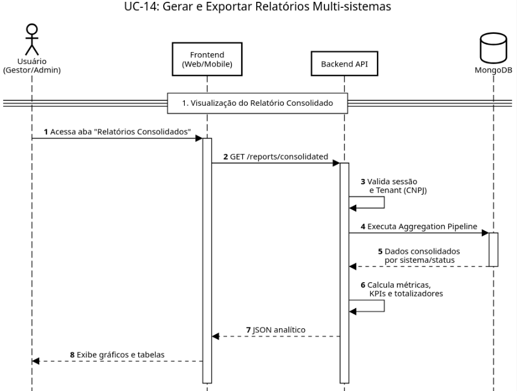
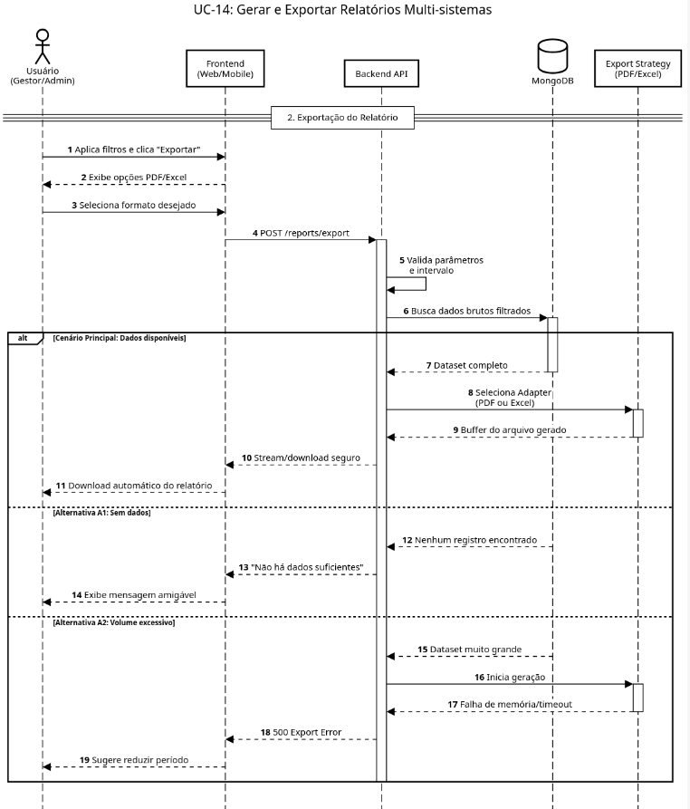

Minha equipe de software : Diagrama de Sequência 14 - Gerar e Exportar Relatórios Multi-sistemas
Created by Michel Bocchi Junior, last modified by João Pedro Souza Peixoto Saraiva on mai. 23, 2026

@startuml
!theme plain
autonumber
skinparam maxMessageSize 180
skinparam sequence {
ParticipantBackgroundColor #EBF8FF
ParticipantBorderColor #005A9C
ActorBorderColor #005A9C
DatabaseBackgroundColor #EBF8FF
DatabaseBorderColor #005A9C
}
title UC-14: Gerar e Exportar Relatórios Multi-sistemas
actor "Usuário\n(Gestor/Admin)" as User
participant "Frontend\n(Web/Mobile)" as UI
participant "Backend API" as API
database "MongoDB" as DB
== 1. Visualização do Relatório Consolidado ==
User -> UI: Acessa aba "Relatórios Consolidados"
activate UI
UI -> API: GET /reports/consolidated
activate API
API -> API: Valida sessão\n e Tenant (CNPJ)
API -> DB: Executa Aggregation Pipeline
activate DB
DB --> API: Dados consolidados\npor sistema/status
deactivate DB
API -> API: Calcula métricas,\n KPIs e totalizadores
API --> UI: JSON analítico
UI --> User: Exibe gráficos e tabelas
@enduml

@startuml
!theme plain
autonumber
skinparam maxMessageSize 180
skinparam sequence {
ParticipantBackgroundColor #EBF8FF
ParticipantBorderColor #005A9C
ActorBorderColor #005A9C
DatabaseBackgroundColor #EBF8FF
DatabaseBorderColor #005A9C
}
title UC-14: Gerar e Exportar Relatórios Multi-sistemas
actor "Usuário\n(Gestor/Admin)" as User
participant "Frontend\n(Web/Mobile)" as UI
participant "Backend API" as API
database "MongoDB" as DB
participant "Export Strategy\n(PDF/Excel)" as Exporter
== 2. Exportação do Relatório ==
User -> UI: Aplica filtros e clica "Exportar"
UI --> User: Exibe opções PDF/Excel
User -> UI: Seleciona formato desejado
UI -> API: POST /reports/export
activate API
API -> API: Valida parâmetros\n e intervalo
API -> DB: Busca dados brutos filtrados
activate DB
alt Cenário Principal: Dados disponíveis
DB --> API: Dataset completo
deactivate DB
API -> Exporter: Seleciona Adapter\n(PDF ou Excel)
activate Exporter
Exporter --> API: Buffer do arquivo gerado
deactivate Exporter
API --> UI: Stream/download seguro
UI --> User: Download automático do relatório
else Alternativa A1: Sem dados
DB --> API: Nenhum registro encontrado
deactivate DB
API --> UI: "Não há dados suficientes"
UI --> User: Exibe mensagem amigável
else Alternativa A2: Volume excessivo
DB --> API: Dataset muito grande
deactivate DB
API -> Exporter: Inicia geração
activate Exporter
Exporter --> API: Falha de memória/timeout
deactivate Exporter
API --> UI: 500 Export Error
UI --> User: Sugere reduzir período
end
deactivate API
deactivate UI
@enduml
{kind=link}
{kind=link}